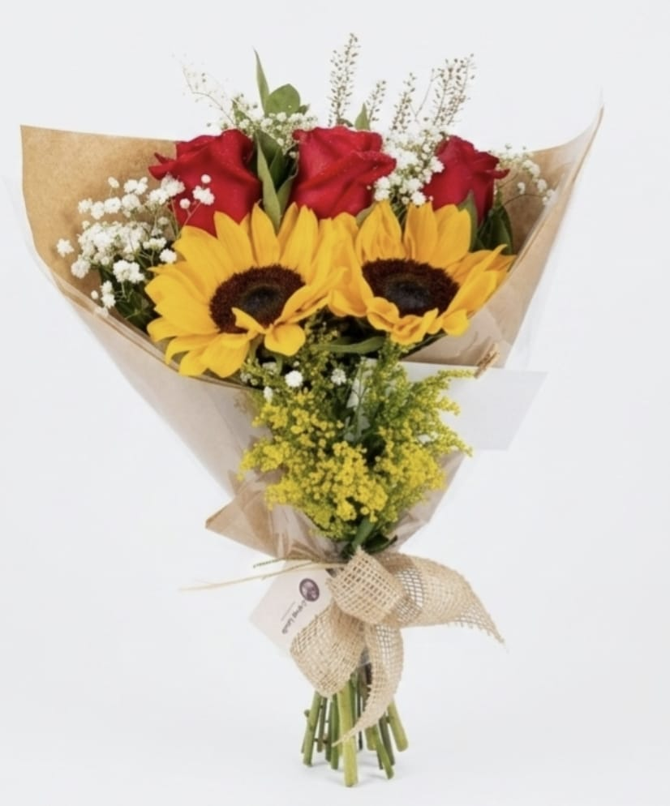
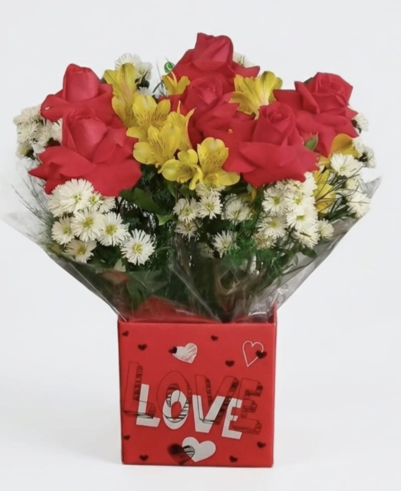

Flores para o Seu Grande Dia
Quando se pensa em casamento, é inevitável pensar em flores. Elas transmitem amor, alegria, vida e pureza. Conheça a Floricultura Flor-Extra e encante-se com nossas criações para o dia mais especial da sua vida.
Serviços Oferecidos
- Buquê de noiva personalizado
- Decoração floral para o carro dos noivos
- Decoração floral para a cerimônia
- Decoração floral para a recepção
Informações Úteis
- Antecedência mínima para contratação
- Pelo menos 1 mês antes do evento.
- Buquês personalizados
- Sim, criamos buquês sob medida para o estilo de cada noiva.
- Deslocamento para o evento
- Sim, o valor é calculado de acordo com a distância até o local.
- Envio para outras cidades ou estados
- Sim, realizamos envios nacionais.
- Assessoria completa de casamento
- Não oferecemos, apenas a parte de decoração floral.
Trabalhos Realizados


Veja mais no nosso álbum completo.
Pronto para Começar?
Solicite um orçamento para o seu casamento ou fale diretamente com a nossa equipe.